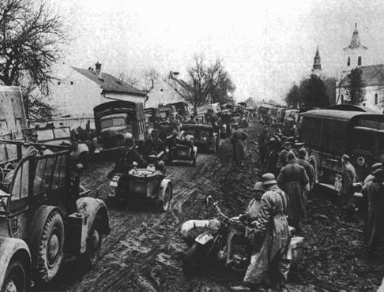

Thessaloniki, the second-largest city in Greece situated in the northern region, held a prominent position as a significant Jewish hub for centuries, often referred to as the "mother of Israel." Around the year 1900, this captivating metropolis served as a melting pot for various religions and ethnicities, including Egyptian merchants, Spanish Jews, Albanians, Bulgarians, Sinti, and Roma (Χεκίμογλου [Chekimoglou] 1996). However, the city's demographic landscape underwent a profound transformation in the first half of the 20th century due to historical events such as the Turkish-Greek War (1922). This conflict led to the forced resettlement of Christian Orthodox citizens from Turkey and Muslim inhabitants from Greece in 1923. Additionally, the Holocaust in 1943 had a devastating impact, as 95% of Thessaloniki's 50,000 Jewish residents did not survive.
fg.1, Note. Members of the Amarillo familypose outside their home in Salonika. Front, from left to right, are Tillie Amarillo and Sarika Yahiel. Seated behind them are their mothers Louisa Bourla Amarillo and Regina Amarillo Yahiel. Standing are Saul Amarillo, Isaccino Yahiel, and Isaac Yahiel. Salonika, Greece, between 1930 and 1939.
These historical events were not isolated incidents in the World War II narrative of Greece's second-largest city. On the contrary, the Jewish community constituted a significant portion of Thessaloniki's population, contributing substantially to its social, economic, political, and cultural fabric over the years. The collective suffering of the Jewish population was keenly felt by all citizens in the city and beyond, underscoring the deep-rooted connection between the Jewish community and the broader societal tapestry of Thessaloniki.
Thessaloniki, unlike many other European metropolises, has been profoundly influenced by Jews throughout its long history (Avidan 2015). The initial Jewish community, known as the Romaniots, is believed to have arrived in Thessaloniki around 140 BC (Magall 2016). The oldest synagogue, where the apostle Paul once preached around 50 AD, was named Etz Chajim(Tree of Life). Unfortunately, it was utterly destroyed in the devastating fire of 1917.
In the 12th century, the first Sephardic Jews settled in Thessaloniki. The term "Sefardi" is derived from the geographical designation S'farad, referring to the Iberian Peninsula, present-day Spain. Many Sephardic Jews found refuge in Salonika, particularly after their expulsion from Spain and Portugal in 1492, finding a welcoming home under the Ottoman rulers. Wolfgang Benz describes this period: "In 1589, Thessaloniki boasted a Jewish population of 24,000, constituting the majority. Living under the protection and restrictions of the Islamic legal principle of dhimma, the Jews enjoyed autonomy in regulating their internal affairs" (Benz 2010: 253).
fg.2, Note. Mural depicting the movement of Torah scrolls following the expulsion from Spain. From Wilshire Boulevard Temple, Los Angeles.
The city rapidly evolved into the "Jerusalem of the Balkans," with a majority Jewish population; by 1900, Jews comprised about half of the total population (80,000 out of 173,000). Thessaloniki witnessed the establishment of Jewish schools, libraries, and newspapers. Notably, Sephardic Jews preserved their Spanish dialect, Ladino. While most engaged in trade or industry, some worked as employees in various sectors, including port labor (Králová 2012).
fg.3, Note. Some 7,000 Jewish men ordered to register for forced labor assemble in Liberty Square in German-occupied Salonika, Greece, July 1942.
By October 1912, Thessaloniki had liberated itself from Ottoman rule, and the Ottoman Empire relinquished control of Macedonia, among other regions, in the 1913 London Treaty. Under Greek rule, the Jewish population decreased to approximately 49,000 by 1940, mainly due to emigration to the USA and Palestine. The great fire of 1917 added to their challenges, leaving many homeless and compensating owners with devalued money (Hilberg 1989, 738). Following the liberation struggle in 1922, Greeks from Asia Minor were forcibly resettled in 1923, arriving in Athens and Thessaloniki as refugees. As part of this population exchange, the Dönme, classified as part of the Turkish population due to their Muslim faith, had to leave Thessaloniki (Μόλχο Ρ. [Molho R.] 2014: 58).

fg.4, Note. SS troops advance during the invasion of Greece. The invasion of the Balkans began in April 1941. Greece, wartime.
During this tumultuous period, tensions arose between Christians and Jews in Greece, leading to an anti-Semitic wave. Raul Hilberg explained that "ethnic Greek nationalism fostered mistrust of the Jews and resulted in the formation of anti-Semitic nationalist associations" (Hilberg 1989, 738). The culmination of this wave was the burning of the Jewish quarter of Campbell (today's Votsi neighborhood in Kalamaria) on June 29, 1931, known as the Greek Pogrom Night. This violence was perpetrated by supporters of the Greek National Union (abbreviated as EEE in Greek), a group with radical views that counted 3,000 members in Thessaloniki (Králová 2012: 85).
From the beginning of the occupation, fear dominated the Jewish community. Mentes Molho mentions in the book The Holocaust in Salonika: Eye Witness Accounts that "when they learned about the invasion of German troops in 1941, most Jews were overwhelmed by fear. Therefore, they ensured food supplies and stayed at home" (Molho M. 2002, 87).
fg.5, Note. Auschwitz concentration camp prisoners look towards the camera, from a crowded bed structure.
"After the German invasion of Salonika on April 9, 1941, many members of the Jewish community were arrested, Jewish clubs and schools were closed, and Jewish street names were street names were renamed into Greek. Many German soldiers looted Jewish property and stole from them cash, jewelry, silverware, works of art, and carpets; much of it was much of it was sent to Germany.”
At the beginning of May 1941, a special commando from Reichsleiter Rosenberg's task force under Lieutenant Hermann von Ingram arrived in Greece. This was done in cooperation with the secret Wehrmacht field police, who collected the population data necessary for later deportations and looted historically valuable documents, cultural assets, and liturgical objects.
fg.6, Note. German tanks rolling through the Arch of Galerius, Salonika, April 18, 1944. The vehicles were called Sturmgeschütz (colloquially known as StuGs), which means “assault gun. Credit: Sueddeutsche Zeitung Photo / Alamy Stock Photo.
On the morning of July 11, 1942, a Saturday, around 9,000 Jewish men between 18 and 45 gathered in Freedom Square in Thessaloniki on the orders of the military commander of Salonika Aegean, General Curt von Krenzki. The Germans mistreated them, and "after four days of registration, the Jewish community was conscripted for forced labor in road construction and other work areas, but many died of malnutrition and exhaustion" (Králová 2012: 89). At the end of 1942, the authorities decided that all people of Jewish origin over the age of 5 had to wear a yellow star. At the same time, according to military orders, they were forbidden to communicate with others, use public transportation, and leave their homes. At the end of February, Merten assured the rabbi that all these measures were only temporary, but some Jews nevertheless left Thessaloniki. On March 3, 1943, the lead story of the newspaper Νέα Ευρώπη [Nea Europi] was given the following title: Jewish question: the Greek people demand a final solution ( Králová 2012: 89-92). The Germans allowed the Jews who were forced to be deported to take only a few personal belongings with them - 20 kilograms per person. In addition, the deportees had to pay for their own train tickets ( Králová 2012: 102).
fg.7, Note. A German corporal leads three Jewish men in forced calesthenics at Eleftheria (Freedom) Square in Thessalonikd July 11, 1942. USHMM WS #33097, COURTESY OF DAVID SION
"The survivor Owadjah Baruch describes the ticket purchase as a reassuring fact that strengthened his hope that the deportation would not end in death. To make the deception even more credible, each head of the family received a cheque for 600 Polish zlotys; in addition, the Germans spread the rumor that the Jews would get their property back after the war."
fg.8, Note. Salonica, city of ghosts Christians, Muslims, and Jews, 1430-1950 1st American ed.
The first deportation train left Thessaloniki for Auschwitz on March 15, 1943, and 17 more followed until August 11, 1943. The first trains mainly deported low-income families so that the rich would not get the idea that Merten had deceived them. The first train arrived in Auschwitz on March 20, 1943. Around 1700 people were immediately taken to the gas chamber, while the majority of the people in the concentration camps starved to death or were arrested in Block 10, where medical experiments were carried out (Králová 2012: 102). Thessaloniki was liberated after Hitler's downfall and the end of the Second World War. Almost 55,000 Jews, including children, never returned to Thessaloniki ( Králová 2012: 100). What is worth mentioning, however, is the fact that a small part of the Greek population "appropriated" the Jewish owners ( Μπενβενίστε [Benveniste] 2014: 190f.). The blow to the Jerusalem of the Balkans was heavy. Like a city of ghosts, as Mark Mazower describes in his book, it always carries the burden of the memory of the Shoah in its heart.
fg.9, Note. Children from the Marysin colony who were rounded-up during the "Gehsperre" action in the Lodz ghetto, march in a long column towards a deportation assembly point, September 1942. Source USHMM website. Unknown author
Returning to Thessaloniki proved to be a jarring experience for many. Often, those coming back were the sole survivors of their families, only to discover that their homes had been taken over by Christian families who had acquired them from the Germans. Initially finding shelter in synagogues, a Jewish Committee was established to identify survivors. The Committee obtained a list from the Bank of Greece detailing 1,800 houses sold to Christians. The new occupants resisted relinquishing their homes, citing legal purchases and their wartime hardships.
fg.10, Note. A Jewish couple wearing the yellow star poses on a street in Salonika. BADGES; BADGES (STAR OF DAVID); ELDERLY; GHETTO/OCCUPATION; JEWISH QUARTERS; Pictured are Rachel and Joseph Chasid, the parents of Margo (Chasid) Melech. PHOTO ARCHIVES
As the war concluded, the communist ELAS, then in control of the city, advocated for the prompt return of Jewish property. However, when a new British-backed right-wing government took charge in Thessaloniki four months later, restitution efforts were collectively halted. The government faced a severe housing crisis due to the influx of war refugees, and influential figures enriched during the war held sway in the administration. The government leaned toward strengthening anticommunist ties, adopting a conciliatory stance toward former collaborators.
The postwar administration's policies drew criticism from the Jewish Agency and the World Jewish Congress, who championed the cause of the Aliyah Jews. Despite challenges, some Jews saved from deportation in Greece chose to convert to Orthodoxy, and a few survivors formed new bonds through marriages. The returnees faced a devastated Thessaloniki, and personal stories of loss and resilience unfolded amidst the ruins.
fg.11, Note. Menorah in flames, Holocaust memorial in Thessaloniki. Credit: Courtesy of Arie Darzi to memorialize the Jewish community in Greece.
The 1951 census listed 1,783 survivors. In 1997, a monument, "Menorah in Flames," was erected to commemorate the deportation tragedy. In 1998, King Juan Carlos I of Spain paid tribute to Sephardic Jews in Thessaloniki. Responding to university professors' requests, a memorial to the Jewish cemetery beneath Aristotle University was unveiled in 2014.
Today, approximately 1,300 Jews reside in Thessaloniki, constituting the second-largest Jewish community in Greece after Athens. Israeli singer Yehuda Poliker recorded a poignant song, "Wait for Me Thessaloniki," honoring the deported Jews.
fg.12, Note. The types of antisemitism discussed the most, as shown by the number of tags, were physical (1214 times), conspiracy (89 times), false (127 times), denial (100 times), violence (63 times), symbols (256 times) and accusation (24 times). Incidents of antisemitism spread by public figures (ASPublic Figure) were discussed in news eight times. Antisemitic statements were present 70 times and were most often related to violence (46 times) and conspiracy (25 times). In total, 54 instances belonged to the category of explicit antisemitic statements and 16 were categorized as implicit.
The Thessaloniki Jewish community sought restitution from Germany for manumission payments made during the war, a plea dismissed by the European Court of Justice. Additionally, they demanded reimbursement from Deutsche Bahn for train fares paid during forced deportations to Auschwitz and Treblinka. Efforts by the Jewish community of Greece to establish a Holocaust Museum in Thessaloniki, featuring a permanent pavilion on the Holocaust of Greek Jews in KZ Auschwitz, persisted. In 2016, a delegation lobbied Greek politicians for support in reclaiming the community archives of the Jewish community of Thessaloniki from Moscow.
fg.13, Note. Portrait of the family of Bohor Kalderon. This photograph was one of the individual and family portraits of members of the Jewish community of , Macedonia, used by Bulgarian occupation authorities to register the Jewish population prior to its deportation in March 1943.
"As long as a society has not forgotten these events, but on the contrary has made them a permanent entry in its national memory, this suffering of war cannot simply be eradicated by a one-sided forgetting on the perpetrator side. Such asymmetrical relationships of remembering and forgetting still make up a considerable part of the burden of the past and have a lasting impact on internal European communication, right up to the current demands for reparations for the injustice of the German occupation in Greece during the Second World War" (Assmann A. 2016 40).
fg.14, Note. Salonique 1850-1918, la "ville des Juifs" et le réveil des Balkans, (sous la direction de Gilles Veinstein), éditions Autrement- série Mémoires, Paris, 1992.(archives Elias Petropoulos).
Reference:
Avidan, Igal (25.12.2015): Thessaloniki – Aufstieg und Niedergang einer jüdischen Metropole. trans. S. Watt. Ware: Wordsworth.
Benz, Wolfgang (2010): Handbuch des Antisemitismus. Routledge, 2011.
Hilberg, Raul (1989): Die Vernichtung der europäischen Juden. Die Gesamtgeschichte des Holocaust. Hrsg. Oxford and New York: Routledge, 1989.
Molho, Mentes M. (2002): Asset of Jewish Salonika. In: Steven Bowman (Hrsg.), The Holocaust in Salonika: Eye witness Accounts. New York: Sephardie House.
Králová, Kateřina (2012): Στη σκιά της κατοχής. Οι ελληνογερμανικές σχέσεις την περίοδο 1940-2010. Αθήνα: Αλεξάνδρεια.
Μόλχο, Ρένα (2004):Το Ολοκαύτωμα των Ελλήνων Εβραίων. Μελέτες Ιστορίας και Μνήμης. Αθήνα: Πατάκη
Χεκίμογλου, Ευάγγελος (1996): Θεσσαλονίκη – Τουρκοκρατία και Μεσοπόλεμος.Κείμενα για την Ιστορία και την Τοπογραφία της πόλης. Θεσσαλονίκη: University Studio Press
{kind=link}
{kind=link}